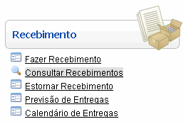
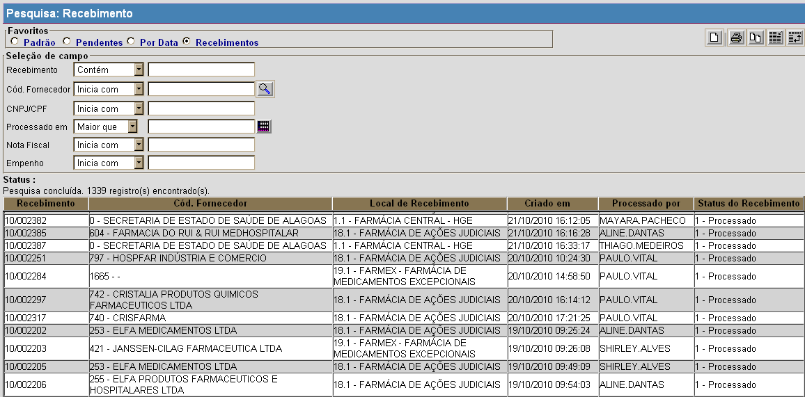
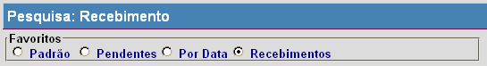

Consultar Recebimentos [ Voltar ]
Utilize este
formulário para localizar e consultar recebimentos já realizados. Para acessá-lo, vá ao menu "Recebimento" da tela inicial e clique em "Consultar Recebimentos". 
Ao clicar no menu, a seguinte tela será exibida:

Execute os passos abaixo para localizar e abrir o recebimento
desejado:
1º Passo: selecion um dos favoritos de pesquisa que melhor se aplica à pesquisa. Os favoritos disponíveis para a pesquisa de recebimentos são: Padrão, Pendentes, Por Data e Recebimentos.

- Padrão. Este tipo de pesquisa retorna todos os recebimentos existentes e possui apenas o filtro Recebimento. Digite os números iniciais do código do recebimento para retornar os registros contendo as iniciais difitadas.
- Pendentes. Esta pesquisa retorna apenas os recebimentos que ainda não foram processados. Ele traz os seguintes filtros de pesquisa:
- Cód. Fornecedor (Inicia com);
- CNPJ/CPF (Inicia com); e
- Nota Fiscal (Inicia com).
- Por Data. Este tipo de pesquisa retorna todos os recebimentos existentes e possui o filtro Criado em. Utilize-o para retornar apenas os recebimentos criados em uma determinada data.
- Cód. Fornecedor (Inicia com);
- CNPJ/CPF (Inicia com);
- Nota Fiscal (Inicia com); e
- Criado em.
- Recebimentos. Este
tipo de pesquisa retorna todos os recebimentos existentes e possui
filtros para várias características do recebimento. Utilize-os para
refinar a busca.
- Recebimento (contém);
- Cód. Fornecedor (Inicia com);
- CNPJ/CPF (Inicia com);
- Processado em (maior que);
- Nota Fiscal (Inicia com); e
- Empenho (Inicia com).
Observação:
para mais informações sobre as funcionalidades de pesquisa, ver o
manual Introdução
ao Sistema.
2° Passo: selecione com um clique o recebimento desejado. Assim que selecionado, o registro do recebimento será aberto na tela "Recebimento" e serão exibidos todos os dados do mesmo.
Para outras informações sobre o recebimento, favor ver o manual Recebimento.
Ir
para o topo da página
|